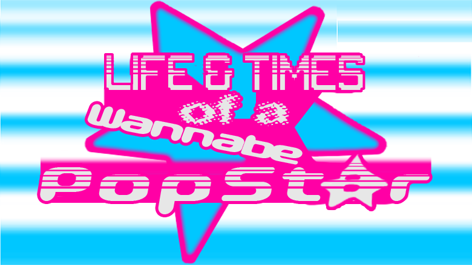
L&ToaWP Logo
log line
L&ToaWP is an interactive video game that follows a rising popstar's journey through self-doubt and insecurity. Navigate different game genres to help them rediscover their confidence and passion for art-making.
medium / techincals
made with and using: Blender - 3D modeling / texturing / rigging / animating, Unity 3D - all games, HD video, Nintendo Switch controller, stool, Vinyl Record w/ "album cover"
Brief Description
Life & Times of a Wannabe Popstar is an interactive video / a video game with video art cutscenes, playable as an Apple Mac application and using a video game controller. Life & Times is a narrative piece that alternates between “live action” green screened video cutscenes, starring Clark Woods as the titular popstar Axel Flux (and all of their friends), and playable portions of the game where the player moves through the piece as Axel in various genres and styles. The piece is held together by the continuation of narrative, color palette, and the aesthetics of early 2000’s media and pop culture fused with a hint of queer world-making/futures. Life & Times explores the idea of living with doubt and anxiety, and not always being able to determine the boundaries between internal worlds and external realities. The piece itself is also existing in between realities, facilitating interactions between the real world and the internal world of the game. They exist in tandem, and the line between each world is as much in Axel’s hands as it is the player’s, and how much either is willing to put into each reality. The piece also features the song To the Max created by Melon Sprout, as well as other sounds sampled from Sprout’s album ‘Melon Patch’.
Synopsis
The game ‘starts’ with a video segment showcasing the events that set up the game. Axel is coming back from the release party for their second album, and while in the limo with their friends who are all having a blast, Axel is left questioning if what they’re doing is meaningful or of any value. As Axel gets out of their limo into the City to walk home, this leads the player directly into the first interactive portion of the piece. The player walks the city as Axel, who is processing their thoughts about the night, in a low-poly third-person 3D world reminiscent of RockstarGames in the PS2 era. The player walks Axel home, who upon arrival to their apartment transitions again to a video cute scene, in an apartment modeled, designed, and rendered in Blender, where Axel decides to go on youtube.com and read the comments under their Music Video for their single To the Max. Now the player must watch Axel’s music video while completing a rhythm game that plays to the song, like a Dance Dance Revolution Arcade style of play (minus the large floor pad). In video again, Axel is frustrated with their art and themselves, and wonders aloud whether they’re past their prime already. They think back to what it was like during the making of and subsequent success of their first album, wondering what was different about the previous time, and as they look into a copy of the album on a shelf in their room. The game shifts into a 2D platformer, where Axel reminisces about the thoughts and joy they had from making the first album, even before its became a success, while the player jumps around a landscape made to blend in with the album cover, which itself is the background of this game. Once the play completes the level, the scene ends with Axel winning an up and comer artist award for their work on their first album, and this transitions to Axel in the real world. They become upset by the notion that having people watch and comment on their music online and winning an award have both become symbols for their self doubt, despite being indications that what they’re doing is getting out to the world and the world is receiving it. This triggers the final boss level, which is a Doom 64-like / Goldeneye64-like first person shooter where the award that has been in the piece on Axel’s shelf and won in the flashback of the previous game, is now a Final Boss. The player must traverse this foreign and hostile, but still colorful, maze to destroy the manifestation of their self-doubt and anxieties. If the player succeeds, there is a crescendo once the award has been defeated, and a short cutscene of Axel. Now visibly more relaxed and able to reflect on the night and their feelings. If the player doesn't succeed and chooses to end the final level, there is a brief cutscene of Axel, defeated and tired, signing and ending the night in bed. These two endings are brief, but neither is wholly good or bad, both are just real ends to their night. This is where the player and Axel end their encounter, and the game returns to the start scene, an overview of the in-game city.
title / start screen
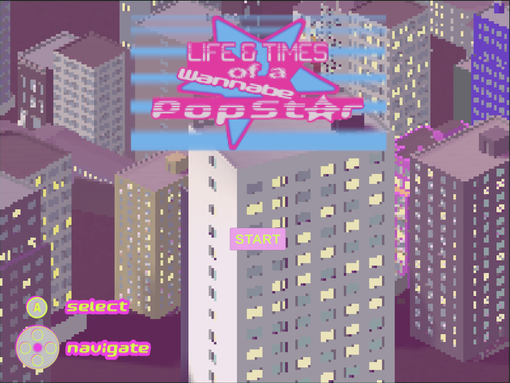
limo - 1st video portion
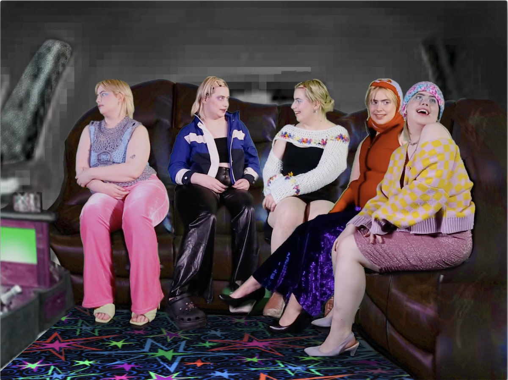
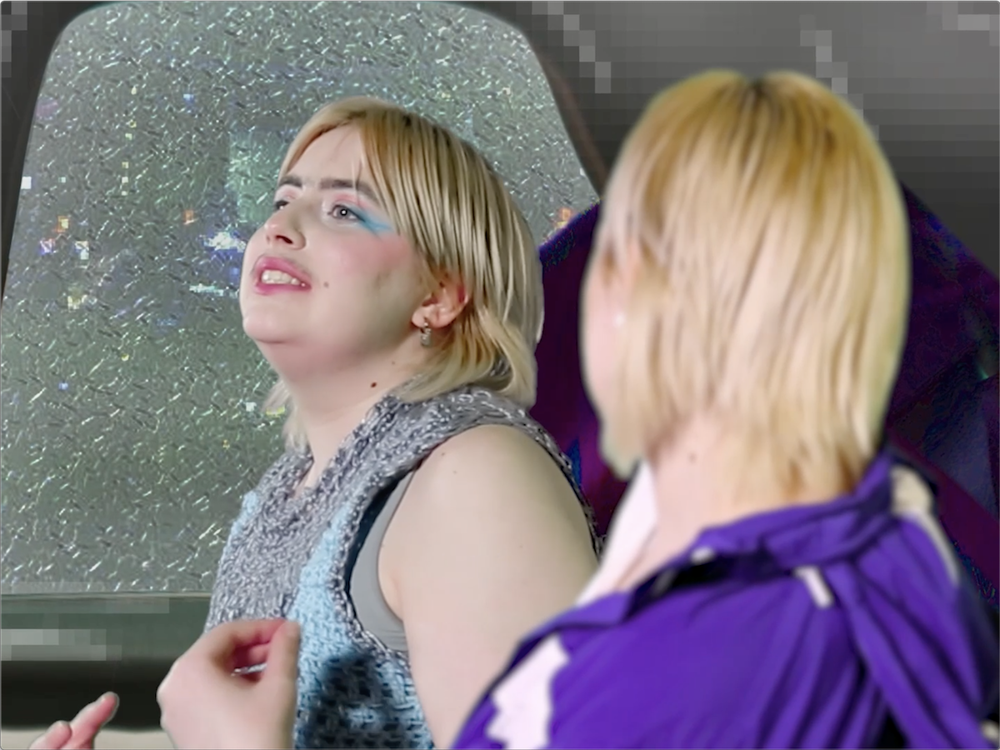
city - 1st game portion
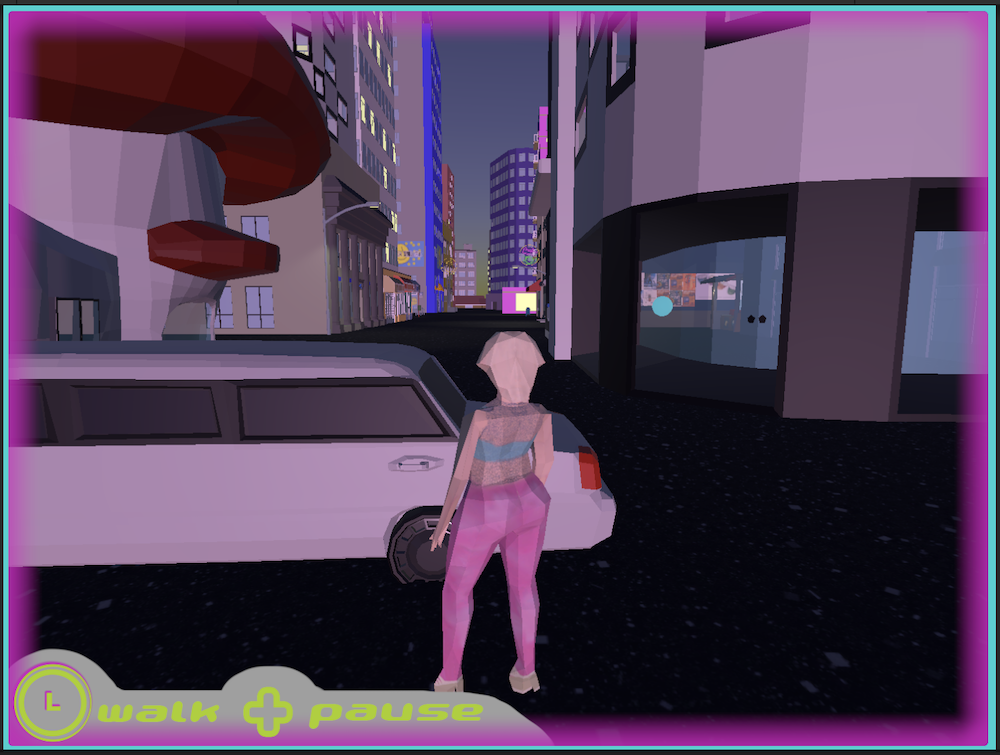
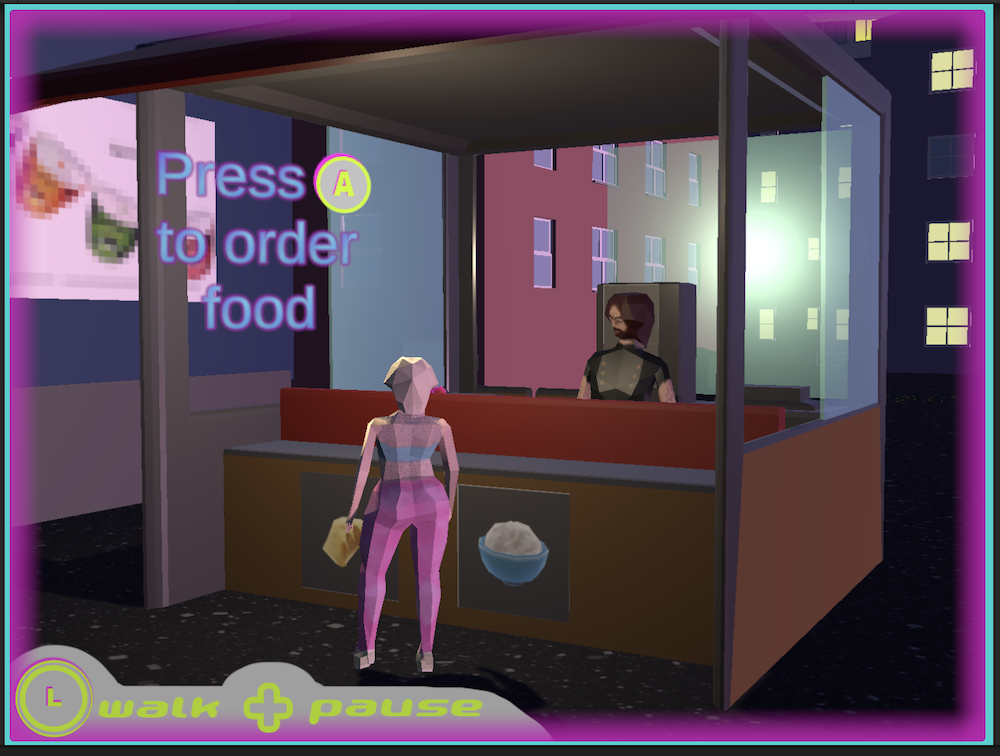
rhythm game / music video - 2nd game portion
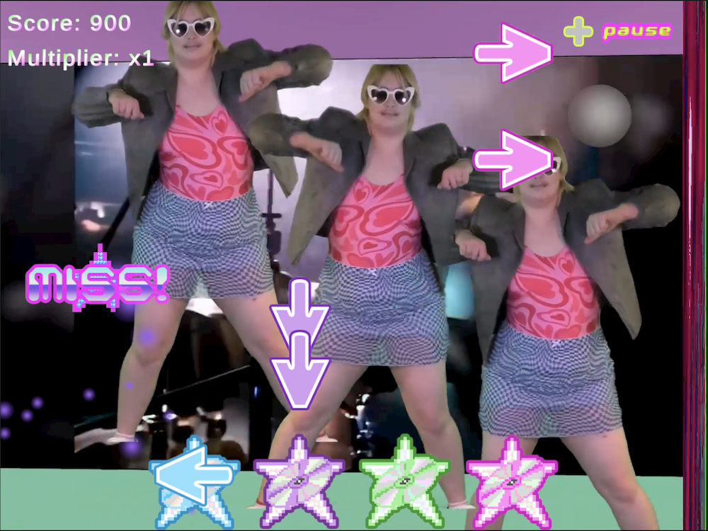
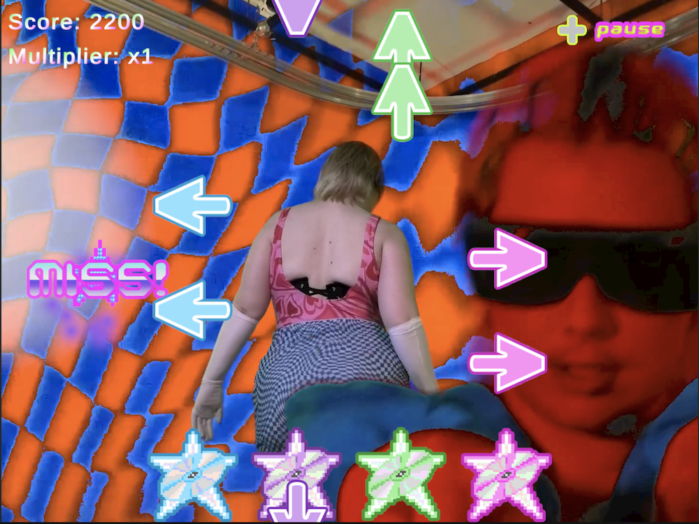
installation documentation
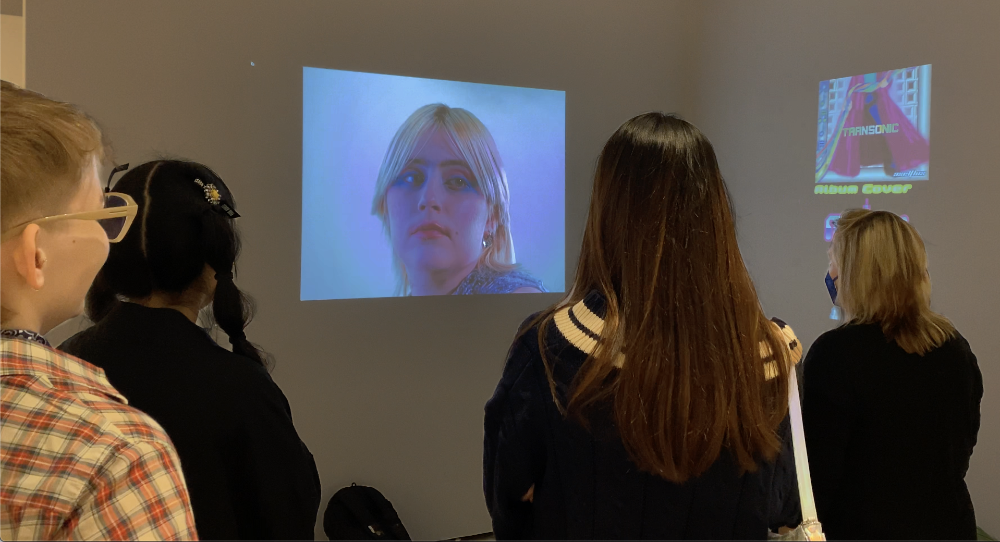

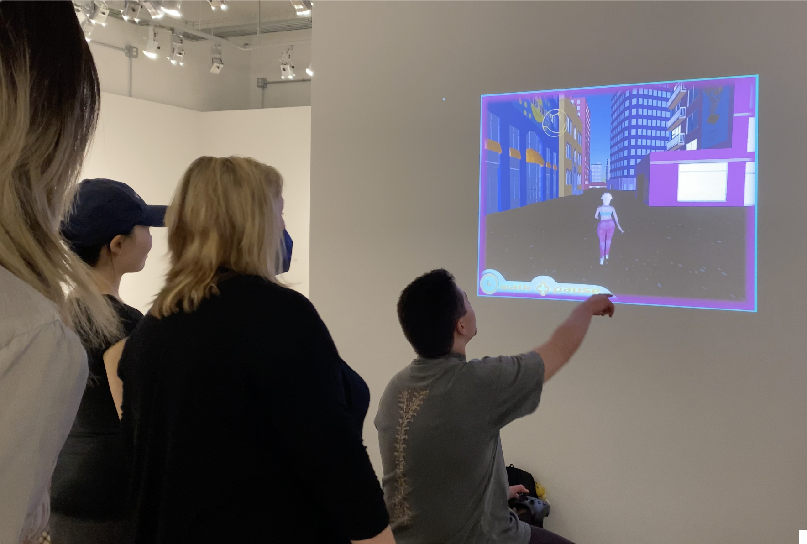
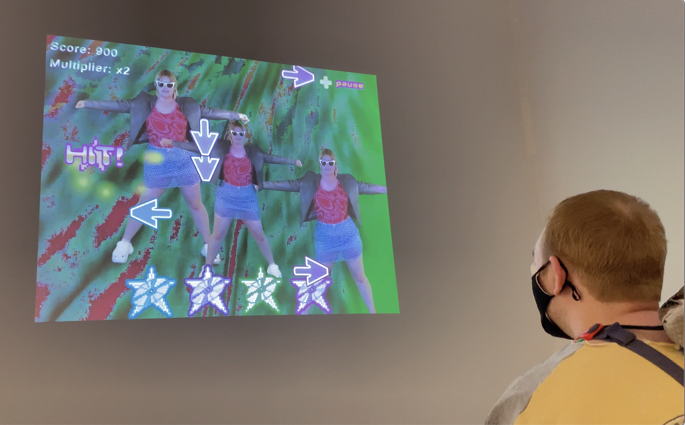
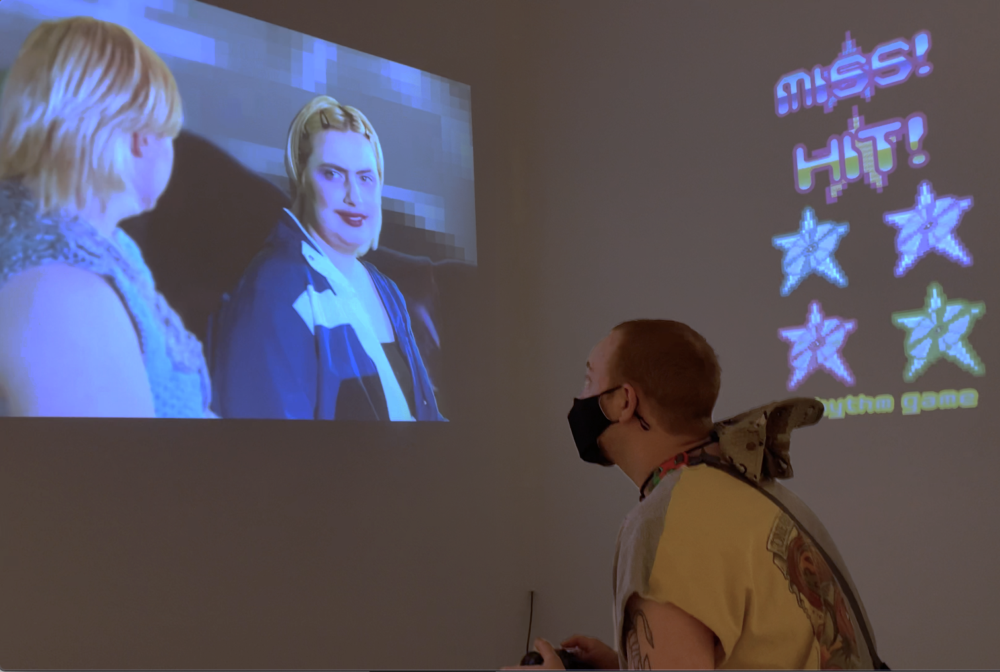